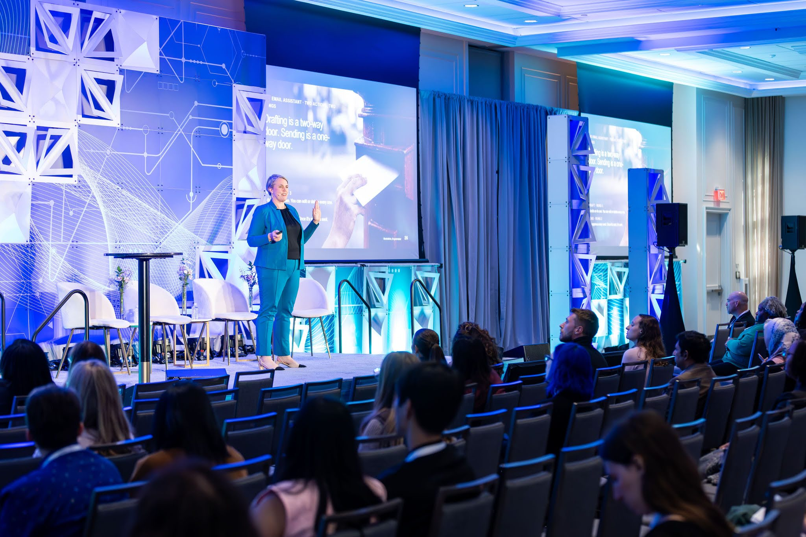

Speaking
19+ engagements across 2023–2026. From a paid talk at McKinsey to closing DataConnect for 700+. Available for corporate events, conferences, and team workshops.
Available Talks
The Trust Continuum scales to different audiences by swapping the emphasis. Every variant includes the gate questions, the aviation stories, and a practical takeaway.
Flagship Keynote · 30–55 min
Five rungs from Answer to Act-within-limits. Aviation accidents mapped to AI failure modes. Gate questions at every step. The stories make the stakes visceral — Air France 447, the penny challenge, Swedish-law annotators, Boeing MCAS. Your audience leaves with a one-page checklist they can apply on Monday.
Data & Analytics Audiences · 30–45 min
Data provenance as the foundation of trust. When your model is only as good as its data, the penny challenge and MCAS's reliance on a single sensor tell the story. For data teams building the pipelines that AI agents depend on.
Healthcare, Pharma & Financial Services · 30–45 min
Governance frameworks for autonomous systems in industries where the stakes are highest. The Patriot missile, Therac-25, and the accountability gaps that appear when AI earns more autonomy than the oversight can support.
Corporate Teams & Offsites · 55 min – half day
A hands-on session where your team maps their own AI features to the Trust Continuum and applies the gate questions. Proven at Product Leader Summit (session NPS 68 — Gibson Biddle: "70 is world-class"). Includes a PDF takeaway with QR capture.

Track Record
Conferences, corporate talks, workshops, and paid consulting — 2023 to present.
| Event | Format | Year | Notes |
|---|---|---|---|
| Product Leader Summit | 55-min workshop | 2026 | Trust Continuum. Session NPS 68 |
| DataConnect Conference | 30-min closing keynote | 2026 | Trust Continuum. 700+ attendees |
| ProductBC (Vancouver) | 30-min keynote | 2026 | Trust Continuum debut |
| Women in Product Conference | Main panel | 2025 | "From Hype to How" with Marily Nika and Ana Grace (Disney) |
| PayPal | Talk (global audience) | 2024 | AI product dev vs. traditional product dev, via Reforge |
| JFF Horizons, Washington DC | Conference | 2024 | Travel paid. "The Power of Us" |
| Product Leader Summit | Lunch table facilitator | 2024 | With Gibson Biddle, Dan Olsen |
| UBC Sauder School of Business | Guest presenter | 2024 | COMM 336: Introduction to Digital Business |
| Microsoft | Talk | 2024 | Co-presented via Reforge |
| McKinsey (paid) | 30-min talk + Q&A | 2023 | "GenAI for Product" — their product team |
| CWI Labs Equity Summit, DC | Summit participant | 2023 | Travel paid |
| Lesbians Who Tech SF Summit | 30-min session | 2023 | Second LWT appearance in 2023 |
| RTC Conference, Illinois Tech | Presentation | 2023 | Co-presented with Midam Kim |
| GLG Expert Network | Multiple paid consultations | 2023–24 | AI Capabilities, AI Hype Cycle, GenAI impact |
| AmplifyHer Speaker Event | Talk | 2023 | "Expand Your Personal Brand" |
| FITC Spotlight AI | Presentation | 2023 | "AI-Powered Prototyping for Non-Coding Creatives" |
| Lesbians Who Tech Pride Summit | Talk (virtual) | 2023 | "Working with Unreliable Genius: GenAI Lessons from Alexa AI" |
| Canadian Gov't IRAP Council | Keynote | — | Federal innovation council |
Audience Reactions
"I've long believed trust will be the most important currency in an AI economy. Polly Allen's talk, 'The Trust Continuum,' met the moment by exploring the layers of trust we need to develop as we build agentic products. As a product leader for reporting and insights at Owner.com, I found it especially relevant to my work."Shireen Brathwaite, Product at Owner.com
"Drawing on aviation, she made the case that AI should earn autonomy one level at a time, and that the person on the loop needs both the context and the time to step in. Great evals are not the same as real-world trust."Janan Guillaume
"The analogy of autopilot creation in aviation and AI agents in data analytics was perfect."Melissa S., Digital Growth & Analytics Leader
"I absolutely loved, loved, loved your building trust along the AI continuum!"Charlotte McGuire
Social proof
At Product Leader Summit 2026, Amira Youssef listed Polly's Trust Continuum workshop alongside sessions by Marty Cagan, Kim Scott (Radical Candor), Claire Vo (Launchpad), and Shimrit Ben-Yair (Google). Her LinkedIn post received 39 reactions.